The Rasters
Historic cafés and famous coffee brands, from the café around the corner in Madrid to the brands found all over the world.
Local: Madrid
Madrid's grand literary cafés have been meeting places for writers, artists and thinkers for well over a century.
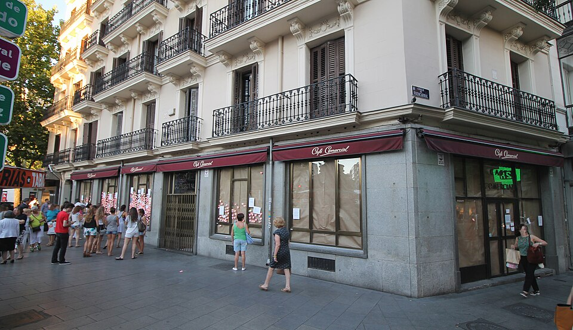
Café Comercial
One of the oldest cafés in Madrid. The poet Antonio Machado was a regular. It closed in 2015 and reopened in 2017.
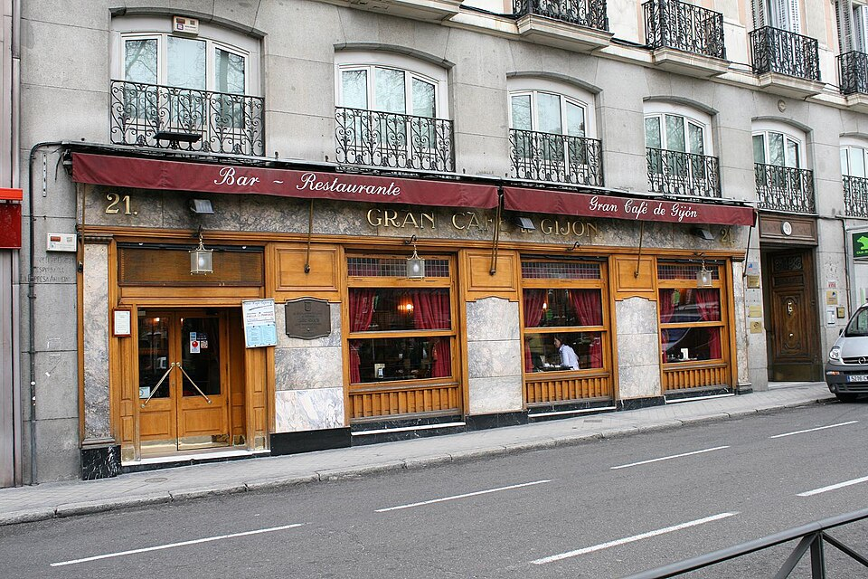
Café Gijón
Founded by Gumersindo García, who named it after his home city of Gijón. Its customers have included Benito Pérez Galdós, Santiago Ramón y Cajal, Ramón del Valle-Inclán, Federico García Lorca, Salvador Dalí and Luis Buñuel. It gives its name to the Premio Café Gijón literary prize.
Sources differ Madrid's official tourism site names the founder Gumersindo García; some other sources call him Gumersindo Gómez.
National: Spain
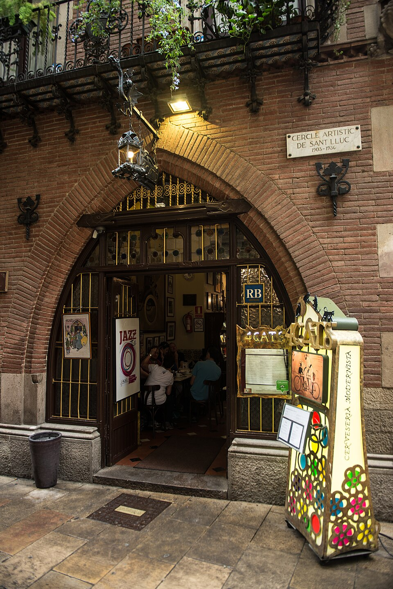
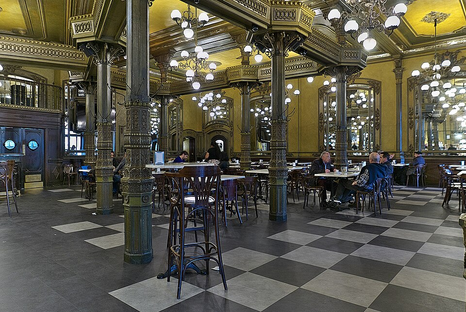
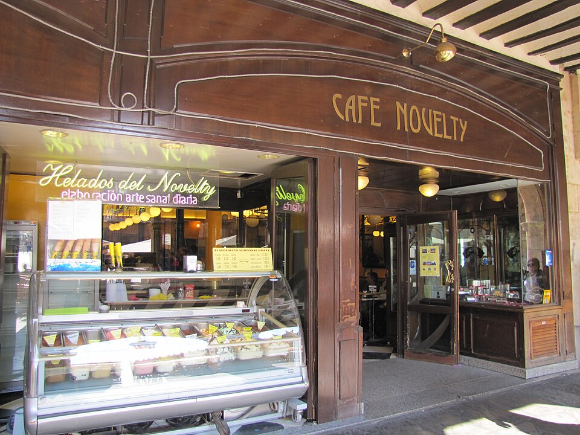
| Café | City | Opened | Known for |
|---|---|---|---|
| Els Quatre Gats | Barcelona | 1897 | A meeting place for modernist artists. A young Picasso held his first solo exhibition here in 1900. The original café closed in 1903 and reopened in 1989. |
| Café Iruña | Pamplona | 1888 | The first place in Pamplona to have electric light. Ernest Hemingway was a regular, and the café has a Hemingway corner. |
| Café Novelty | Salamanca | 1905 | On the Plaza Mayor; considered the oldest café in Salamanca. |
International: historic cafés
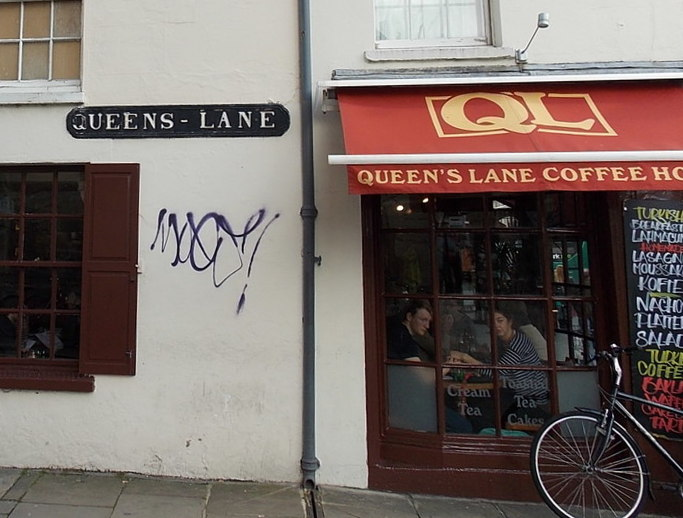
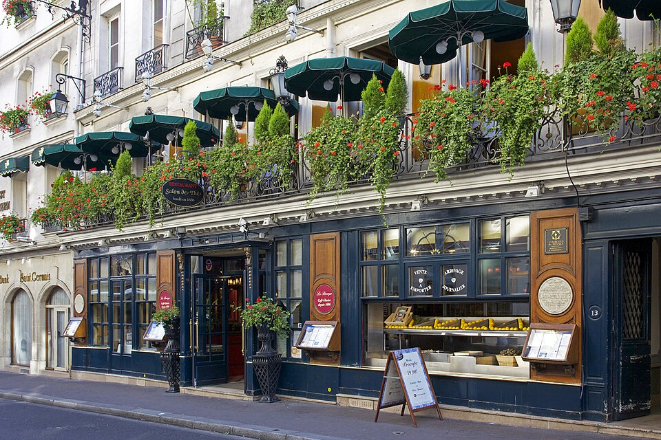
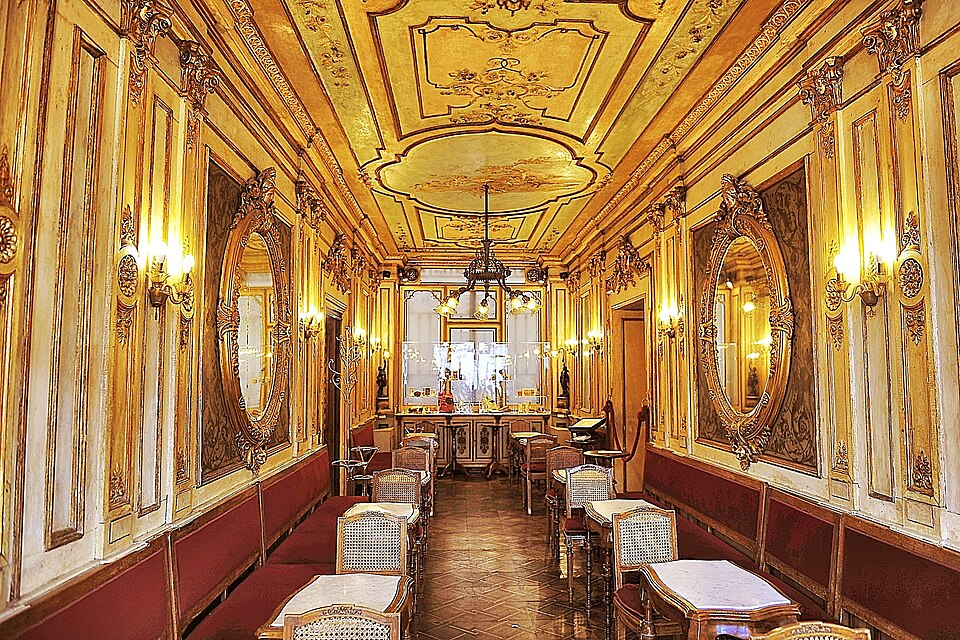
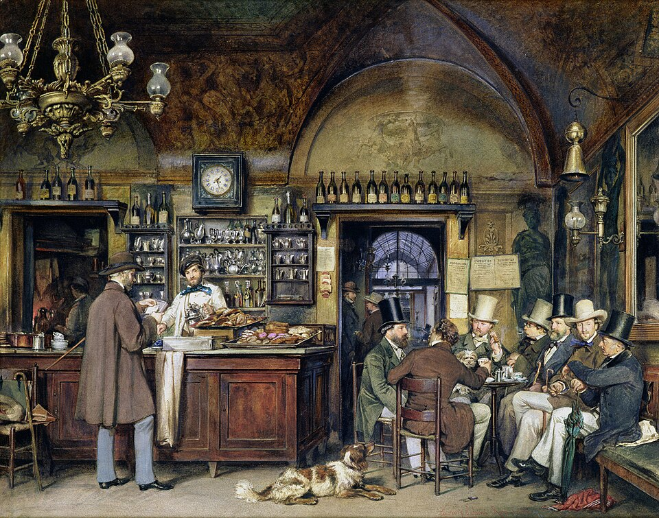
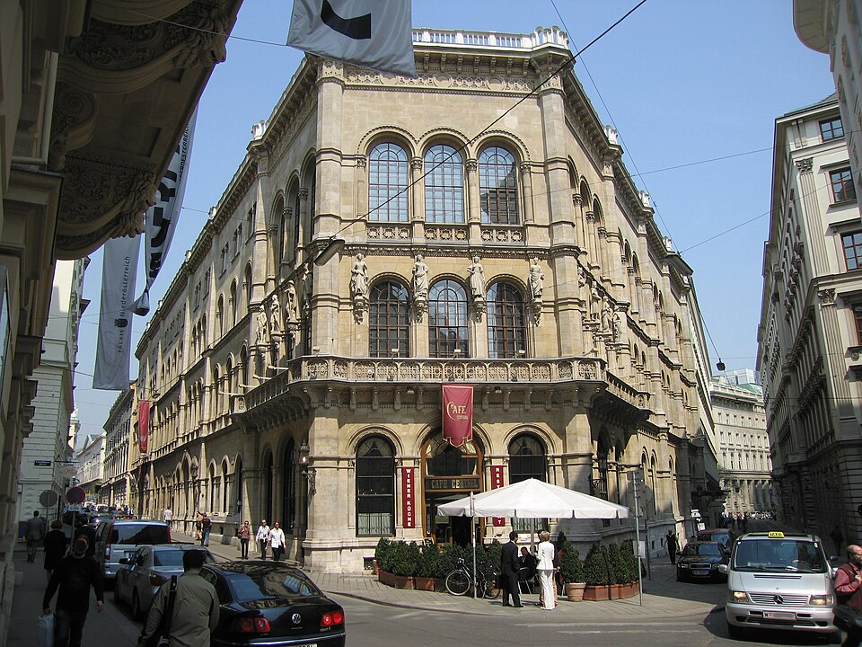
| Café | City | Opened | Notes |
|---|---|---|---|
| Queen's Lane Coffee House | Oxford | 1654 | Founded by Cirques Jobson. Claims to be the oldest coffee house in Europe that is still serving (at its current address since 1970). |
| Café Procope | Paris | 1686 | Founded by the Sicilian Francesco Procopio dei Coltelli; often called the oldest café in Paris. |
| Caffè Florian | Venice | 1720 | On Piazza San Marco. First called "Alla Venezia Trionfante", and reportedly one of the few cafés of its time to welcome women. |
| Antico Caffè Greco | Rome | 1760 | On Via dei Condotti, near the Spanish Steps; described as the oldest café in Rome. In 2025 a rent dispute put its future at risk. |
| Café Central | Vienna | 1876 | A classic Viennese coffeehouse; Sigmund Freud and Leon Trotsky were among its customers. |
Good to know Many cafés claim to be "the oldest". Because these claims are often disputed, it is safest to call them "among the oldest".
International: famous brands
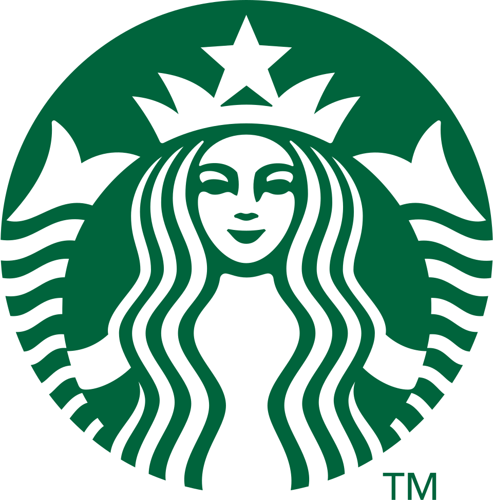
StarbucksOpened on 30 March 1971 near Pike Place Market by three friends: Jerry Baldwin (an English teacher), Zev Siegl (a history teacher) and Gordon Bowker (a writer). At first it sold whole coffee beans, tea and spices, not drinks. The founders learned to roast from Alfred Peet, of Peet's Coffee, and named the company after the first mate in Moby-Dick.
Howard Schultz joined in 1982 and, inspired by Italian espresso bars, pushed the company to serve drinks. In 1987 he led a group of investors that bought the company.
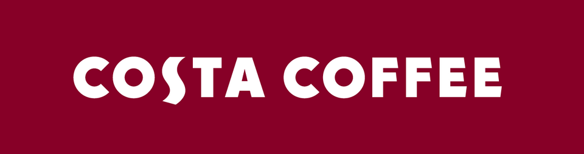
Costa CoffeeFounded by the Italian brothers Bruno and Sergio Costa as a roastery supplying caterers and Italian coffee shops. According to Costa's own history, its first coffee shop opened in 1981 on Vauxhall Bridge Road. The company was later owned by Whitbread and has been owned by The Coca-Cola Company since January 2019.
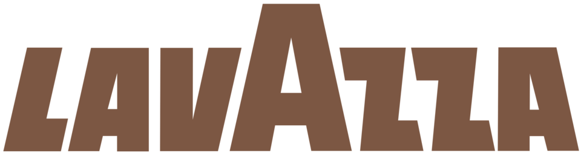
LavazzaBegan when Luigi Lavazza bought a small grocery shop on Via San Tommaso in Turin, where he started blending coffees. It is still a family company, run by the third and fourth generations of the Lavazza family.
Evidence: [13]
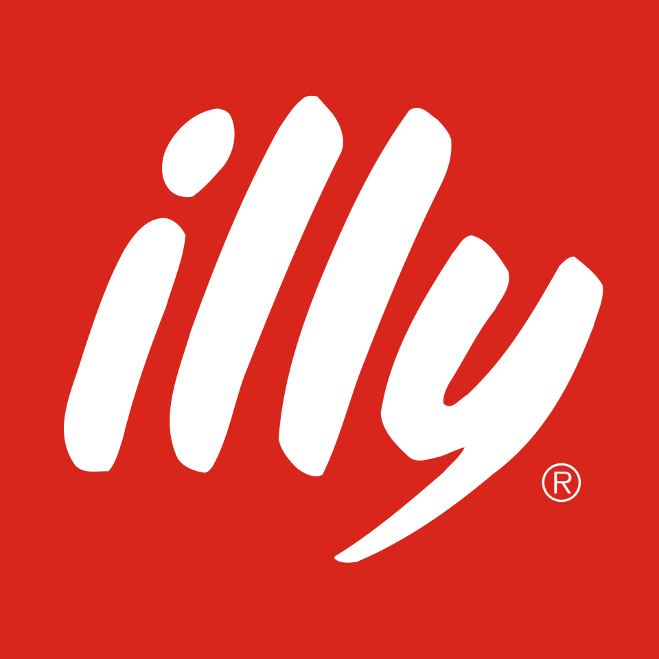
illyFounded by Francesco Illy, a Hungarian-born former soldier who settled in Trieste after the First World War. In 1935 he invented the Illetta, an early automatic espresso machine. The company has been led by his son Ernesto and then by the third generation of the family.